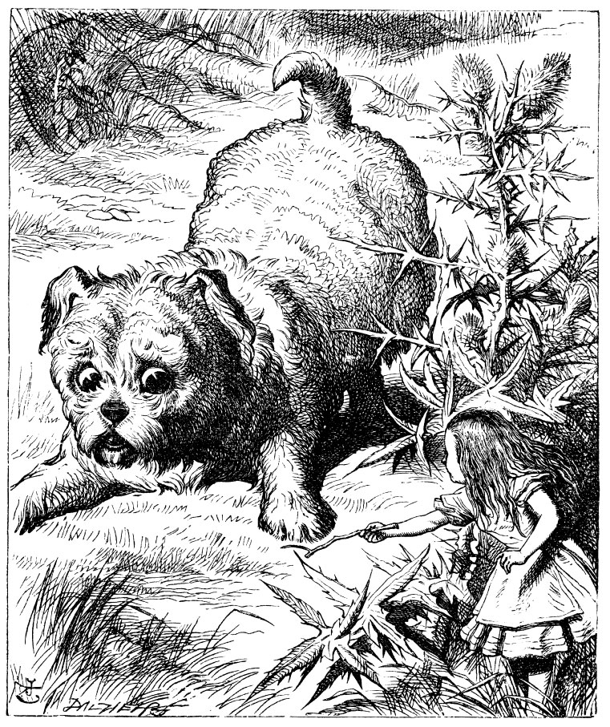

“Yine de, nasıl da tatlı şirin bir yavruydu,” dedi Alice, dinlenmek üzere bir düğün çiçeğine yaslanıp, bir yaprağı yelpaze yaptığı sırada. “Ona ne numaralar öğretirdim, eğer... eğer ki boyum ona uysaydı! Aman Tanrım, az kalsın unutuyordum, boyumun yeniden uzaması gerek! Şimdi bir bakalım... Bunu nasıl başarabilirim acaba? Galiba bir şey yemeliyim ya da içmeliyim veya başka bir şey: ama sorun da bu ya, neyi?
Gerçekten de asıl sorun işte buydu: Neyi? Etrafındaki çiçeklere, çimenlere şöyle bir bakındı, ama öyle görünüyordu ki çevresinde bu iş için elverişli yenecek veya içilecek bir şey yoktu. Bu arada hemen yanı başında kendisiyle yaklaşık aynı boyda kocaman bir mantar gördü; mantarın altını, her iki yanını ve arkasını yokladı, sonra da acaba üstünde ne var diye bir de oraya bakayım dedi.
Parmak uçlarına basarak mantarın kenarlarından üstüne bakmaya çalıştı; orada kocaman mavi bir tırtılla göz göze geldi, tırtıl, ne Alice’i ne de başka bir şeyi umursamadan kollarını birbirine kavuşturmuş, oturmuş sakin sakin nargilesini çekiyordu.